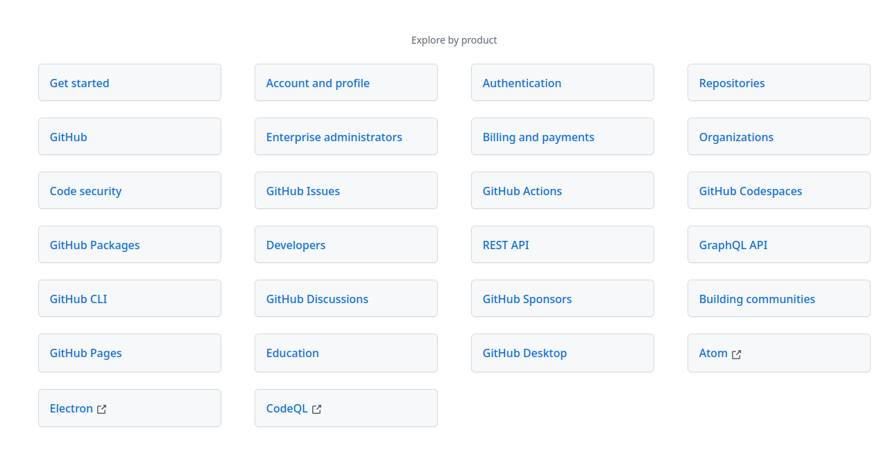
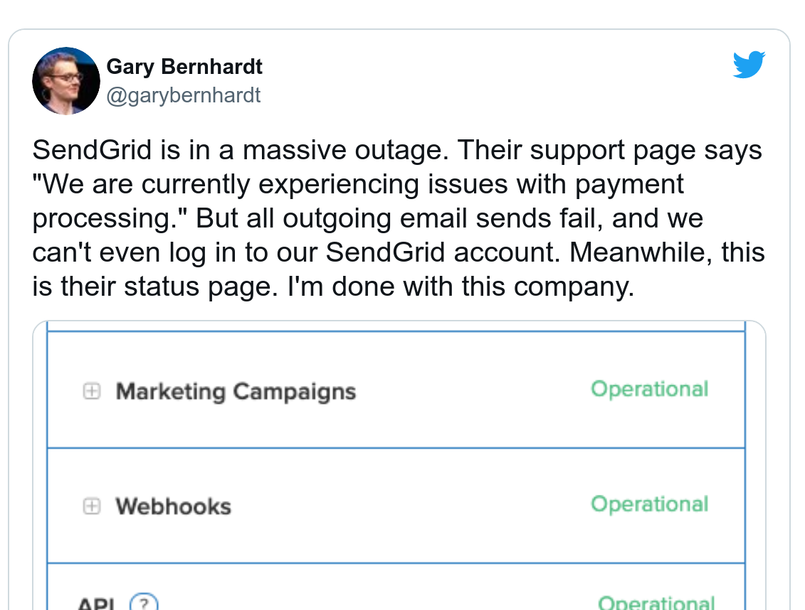

Unsuck API Integrations
Smartlook Meetup 22. 9. 2021
Jan Vlnas, Superface
Speakers notes go here.
Developer advocate
API integrations? 🤔
Send
email
Track
parcel
Get
weather
Fetch
ad metrics
Send event to analytics
3rd parties
&
Internal APIs
3rd parties
&
Internal APIs
Capabilities
API integrations suck
API integrations suck?
✋ Raise your hand if you agree
Why they suck?
(rant ahead)
Discovery sucks
Is it cheap?
Is it easy?
Is it reliable?
Too many options

Documentation sucks
I want to list repositories
Doesn't solve my problem
Great your API is restful
Functionality sucks
Docs don't reflect reality
 This is example from Tumblr API documentation.
This is example from Tumblr API documentation.
Interactive examples
I'd rather call the API than to trust the documentation
Maintenance sucks
APIs evolve even if your use-case remains the same.
Outages suck

Integration
is
liability
Maybe it works for now, but it may come later and bite you.
Machine to
machine communication
Machine to
machine communication
is fiction
🧑🏾‍💻 build API
🧑🏼‍💻 write docs
👩🏻‍💻 read docs
👩🏻‍💻 write integration
Humans to
humans communication
via docs
What can we do about it?
More tooling?
Curing symptoms, not disease
(sales pitch ahead)
Principles
Use-cases not HTTP calls
Think Send Email
not POST /email
Use-cases not providers
Think what happens if your provider is down.
Direct calls not proxies
iPaaS
Do you know this acronym? Integration Platform as a service.
They usually harmonize data inside their service. What if the
integration platform goes down?
iPaaS
Superface is not it. The calls go directly to providers. If Superface
services go down, it doesn't break running apps. Also, we don't need to
handle your sensitive information.
Runtime
not hardcoding
Handle API changes without redeploy
Universal client not custom ones
At this moment some developer somewhere is implementing a bespoke client
for an API
How does it work?
Demo
Where are we heading?
Self-integrating apps
API Keys management
Capabilities marketplace
Universe of capabilities
superface.ai